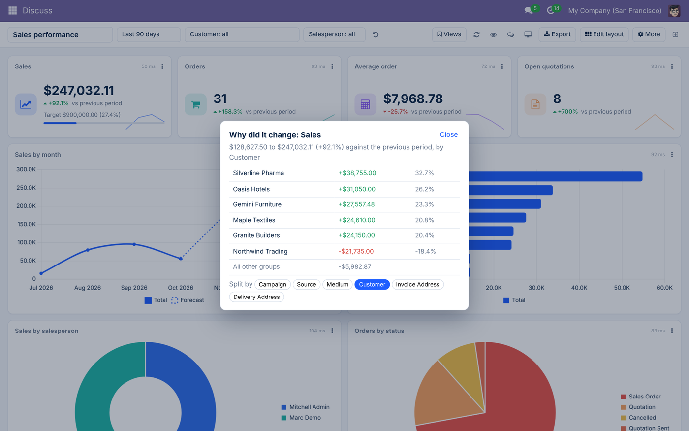
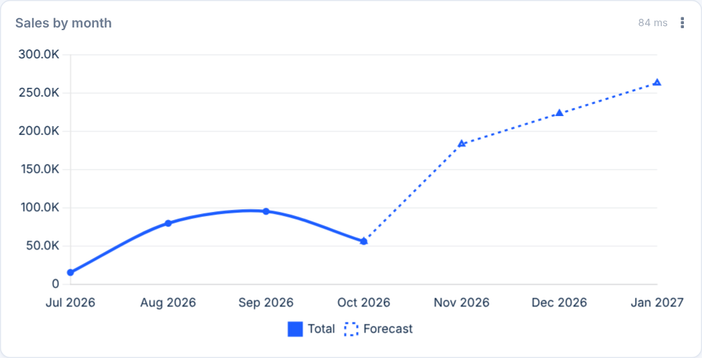
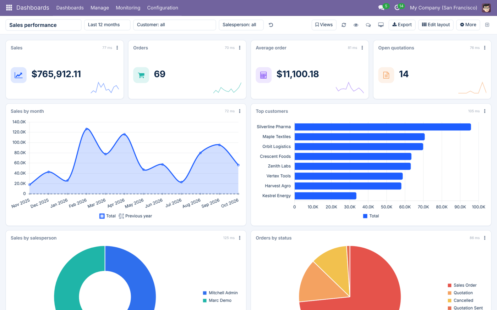
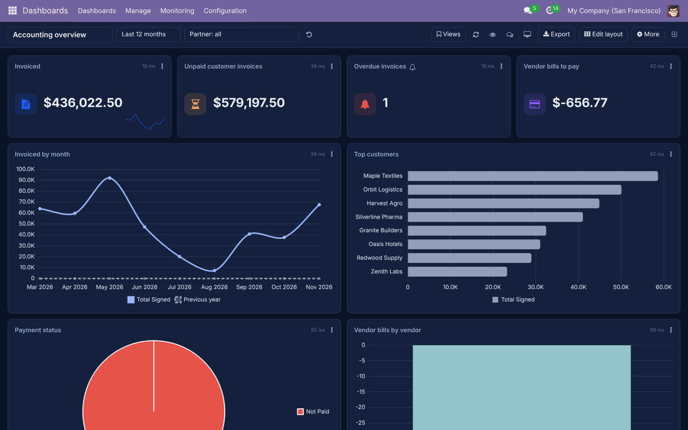
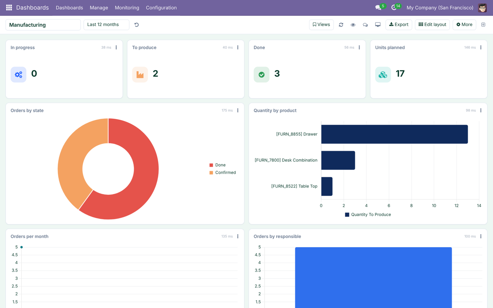
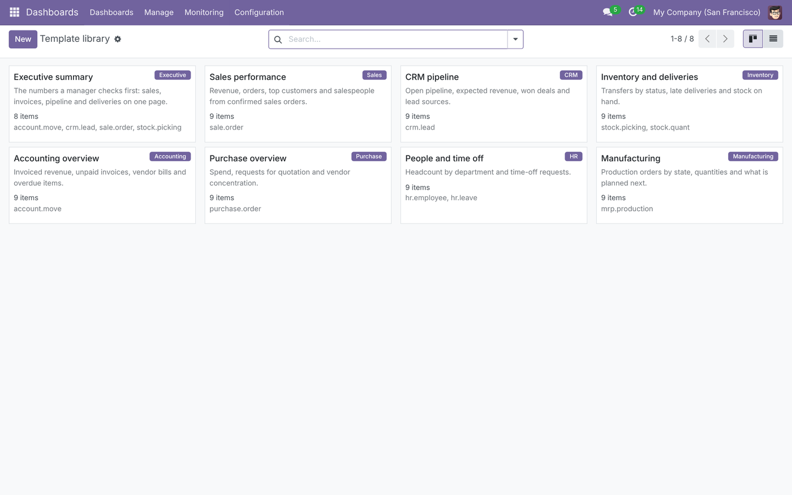
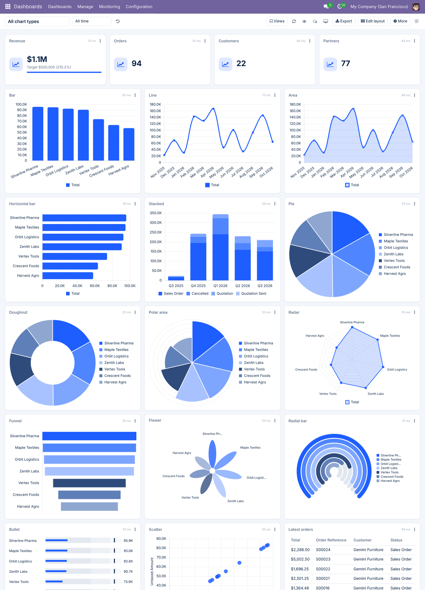
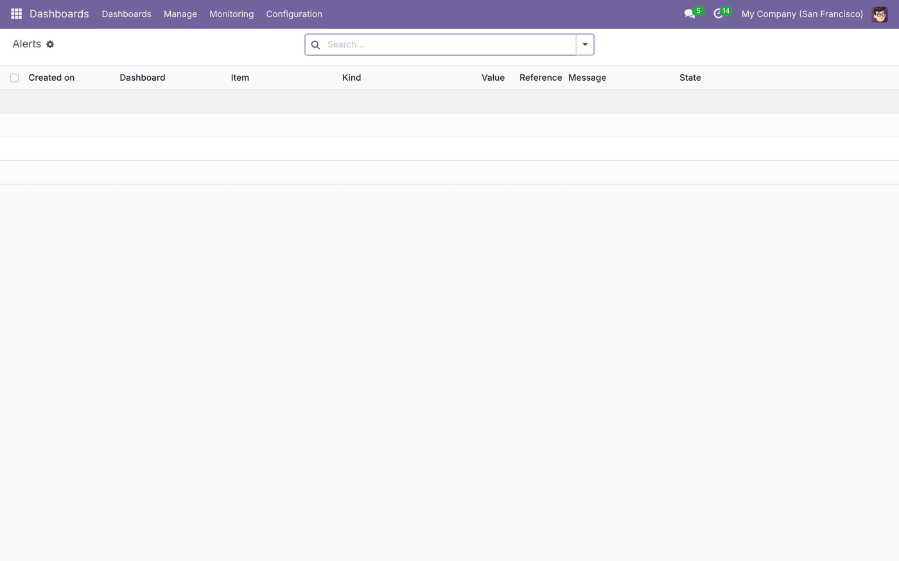
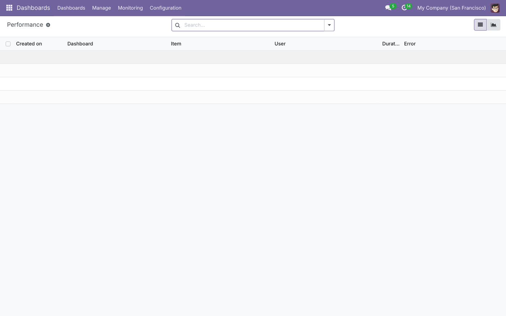
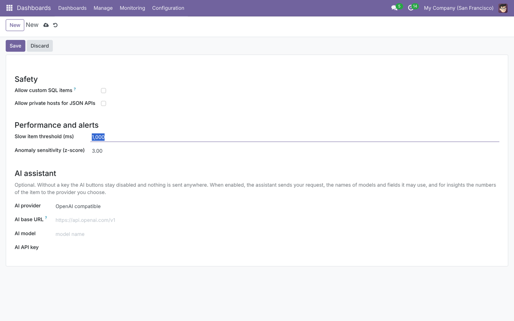

AXSync Dashboard Pro
Build live dashboards from any Odoo data. KPI tiles, 15 chart types, drill-down, templates, alerts and email reports, plus insights that explain your numbers without any AI key.
Build live dashboards from any Odoo data. KPI tiles, 15 chart types, drill-down, templates, alerts and email reports, plus insights that explain your numbers without any AI key.
Version 20.0.1.0.0 for Odoo 20
Most teams export Odoo data to spreadsheets to see their numbers. AXSync Dashboard Pro keeps the numbers inside Odoo, live, and respects who is allowed to see what.
Create a dashboard from a template or from scratch, add items from dropdowns, drag them into place and share. Every item loads on its own, runs with the viewer rights and links back to the records it counts.
Then go further than a chart: ask a number why it moved, project the trend, and see whether you are on pace for the target.

Executive summary with KPI tiles, trend charts and a top list
Calculated by the module itself. No AI provider, no extra service.
One click on a KPI or chart tells you which customers, products, salespeople or stages explain the movement against the previous period, with the amount and share of each. No AI key and no spreadsheet needed.
Add a dashed trend projection of 1 to 12 periods to any line, area or bar chart grouped by date. The unfinished current period is left out of the fit so it does not drag the trend down.
A KPI with a target shows where the month, quarter or year is heading: "On pace for 118% of target", calculated from the days elapsed so far.
Every KPI alert is also posted to a webhook URL you set once in the settings. Failures never block the alert itself.

Why did it change: the groups behind the movement

Sales trend with a dashed 3 month forecast
Everything needed to build and run dashboards.
KPI tile, to-do list, list and 15 chart types. Every item has its own source, filters and drill-down.
Pick a model, measure, aggregate and grouping from dropdowns. Domains, date fields and formulas included.
Read-only SQL, external PostgreSQL or MySQL, JSON APIs, Excel and CSV files.
12 column grid, resize, copy and move items between dashboards, TV mode for wall screens.
24 date presets including financial year and next period, global filters, saved views, %UID and %MYCOMPANY tokens.
Click any bar, slice, point or tile to open the records behind it.
Eight templates for sales, CRM, inventory, accounting, purchase, HR, manufacturing and executive use.
Describe a dashboard in plain words, or ask for an explanation of the numbers. Bring your own provider.
KPI thresholds, anomaly checks, daily snapshots and scheduled email reports with Excel and PDF attached.
Changes create snapshots. Restore any of the latest 40.
Dashboards are shared only with chosen users or groups. Items run with the viewer rights. No sudo.
Give a dashboard its own Apps menu entry. Seven themes, charts follow them.
Taken from a running Odoo database with sample data.

Sales dashboard created from a prebuilt template

CRM pipeline with the Slate theme

Accounting overview with the Midnight dark theme

Manufacturing dashboard with the Emerald theme

TV mode for wall screens

Template library
Plus KPI tiles, lists and to-do lists.

All 15 chart types on one dashboard
Install the module and start from a working dashboard.
Template library
Dropdowns for model, measure, grouping and chart type. Drag, resize and arrange on a 12 column grid.

Item form: model, measure, group by, domain, chart type

Edit layout: drag, resize and rearrange items on a 12 column grid
Alerts, performance log, external connections and settings.

Alerts on KPI thresholds

Performance log for slow items

External database connections

Settings: SQL switch, AI provider, thresholds
Built so that a dashboard never shows more than the viewer is allowed to read.
Odoo model items run with the rights of the user who opens them. No sudo anywhere in the data path.
A dashboard is visible only to its creator until it is shared with users or groups.
SQL is off by default, Manager only, single SELECT, read-only transaction, timeout and row limit.
| Group | Can do |
|---|---|
| Dashboard User | Open shared dashboards, filter, export. |
| Dashboard Builder | Create and edit own dashboards and items, use templates. |
| Dashboard Manager | Everything, including SQL items, connections, settings and logs. |
Install, open Dashboards in the Apps menu, then Configuration, Settings for the SQL switch, alert webhook, AI provider, slow item threshold and anomaly sensitivity. Full steps are in the module doc folder: installation, user manual, tutorial, chart guide, smart insights guide, AI guide, SQL security guide, export and import guide, troubleshooting and developer guide.
Does it work on Odoo Online?
Third party modules cannot be installed on Odoo Online. It works on Odoo.sh and on premise.
Do I need Odoo Enterprise?
No. The module depends on base, web and mail only.
Do the smart insights need an AI key?
No. Why did it change, forecast, target pacing and webhooks are calculated by the module. AI is optional and only adds plain-language summaries and dashboard generation.
How is the forecast calculated?
A least squares straight line through up to the last 24 completed periods. It is a trend projection, not a statistical forecast, and it shows nothing with fewer than 3 periods.
Can viewers see data they should not?
Not through Odoo model items, which use the viewer rights and record rules. SQL and external items bypass record rules by nature, so only Managers can create them and SQL is off by default.
Which AI providers work?
Any OpenAI compatible endpoint and Anthropic. You enter your own key.
Is the map detailed?
Country level.
Is MySQL supported?
Yes, with the pymysql package installed on the server. PostgreSQL needs nothing extra.
Does it refresh in real time?
Items refresh on an interval you choose.
How do I get support?
Email hunain@axsync.com or use the Support tab of this listing.
| Version | Notes |
|---|---|
| 20.0.1.0.0 | First release. 18 item types, six data sources, 24 date presets, templates, AI assistant, alerts, email reports, version history, per dashboard menu entries, Why did it change, forecast, target pacing and alert webhooks. |
The map is country level. Refresh is interval based. PNG export is for canvas charts only. Monetary values are shown in the company currency. The forecast is a straight line trend. MySQL needs pymysql. The AI assistant needs your own provider key.
AXSync, www.axsync.com, hunain@axsync.com. Bug fixes are free. Customizations are quoted separately.